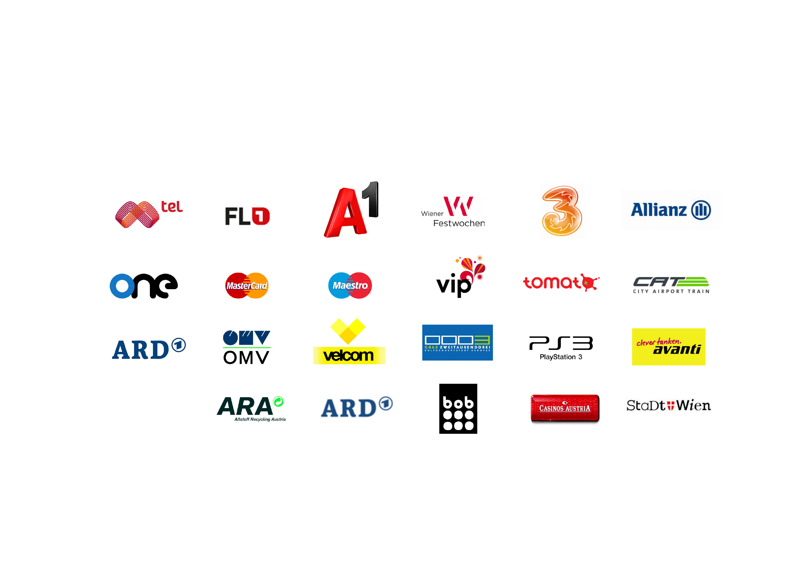

Marken stehen heute vor einer doppelten Herausforderung: Wirtschaftsdruck wächst, Transformationen überfordern, AI schafft Verunsicherung. Und während große Organisationen White-Collar-Jobs durch AI ersetzen, entsteht eine fundamentale Frage:
Welcher Wert ist Friction, welcher ist Urteilsvermögen?
Die Unterscheidung entscheidet über Überleben. Kaufentscheidungen werden zunehmend durch AI-Agenten vermittelt – die bewerten nicht Ästhetik, sondern Kohärenz. Inkonsistenz wird vom Schönheitsfehler zum Ausschlusskriterium.
Mein Ansatz: Strategische Markenentwicklung mit AI-Kompetenz – von der Analyse über die Implementierung bis zum laufenden Support. Mit Tiefgang und hemdsärmligem Pragmatismus.
Lassen Sie uns sprechenJahrelang wurde Branding als Präsentation behandelt. Als Ästhetik. Als Wrapper. Etwas, das man "über" die Strategie legt. Das funktioniert nicht mehr.
Kaufentscheidungen werden zunehmend durch AI-Agenten vermittelt. Systeme, die im Auftrag von Nutzern Optionen vergleichen, bewerten, vorselektieren.
Und Agenten belohnen keine Ornamente. Sie belohnen Kohärenz.
In dieser Welt brauchen Marken zwei Dinge gleichzeitig:
Systematische Klarheit: Konsistente, verifizierbare Informationen, die Maschinen korrekt interpretieren können.
Emotionale Resonanz: Weltanschauung, kultureller Fit, menschliche Bedeutung.
Nur lesbar? Sie werden gelistet und ignoriert. Nur resonant? Sie werden bewundert und vergessen.
Ich helfe Ihnen, beides zu sein.
Ich arbeite auf zwei Ebenen: Strategische Markenentwicklung und AI-gestützte Implementierung. Beides gleichwertig, beides notwendig.
Markenstrategien mit inhaltlicher Tiefe – nicht als PowerPoint-Übung, sondern als Grundlage für konsistentes Handeln. Von der Analyse über die Positionierung bis zur operativen Umsetzung.
Ich weiß, wo AI und Automatisierung bei meinen Kunden am besten eingesetzt werden können – und implementiere es. Von der Prozessanalyse über die Tool-Auswahl bis zur Integration.
Nach der Implementierung bleibe ich als strategischer Sparringspartner verfügbar. Für Optimierungen, neue Herausforderungen, oder einfach als externe Perspektive.
Case Study: Automatisierter Brand Support mit AI. 70% Reduktion manueller Anfragen, 24/7 Verfügbarkeit, konsistente CI-Anwendung über alle Märkte. Implementation + Begleitung über 8 Monate.
Je nachdem, was Sie brauchen: Interim Management (3-12 Monate), Strategieprojekte (6-16 Wochen), oder Strategic Advisory (laufend, aufwandsbasiert).
Warum ich nicht in Stunden denke:
Zeit wird als Währung entwertet. Mein Wert liegt nicht in "Beratertagen", sondern in strategischen Ergebnissen. Preisgestaltung basiert auf Outcome, nicht Aufwand.
Erfahrung mit führenden Marken

Integrated Marketing Leadership & Brand Performance
Über 20 Jahre Erfahrung in strategischer Markenführung und Performance-Marketing. Ich kombiniere strategische Tiefe mit hemdsärmligem Pragmatismus.
Worin sind Sie wirklich gut? Was können Sie wirklich? Und wie stellen wir sicher, dass das nicht nur gesagt, sondern systematisch gelebt wird?
Das klärt sich am besten im Gespräch.
Netzwerk: strategieaustria.at · brand.a1.group · saffron-consultants.com
Wien, Österreich · Castellezgasse 21/5 · 1020 Wien